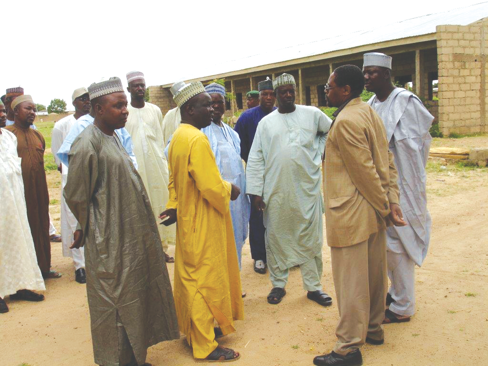
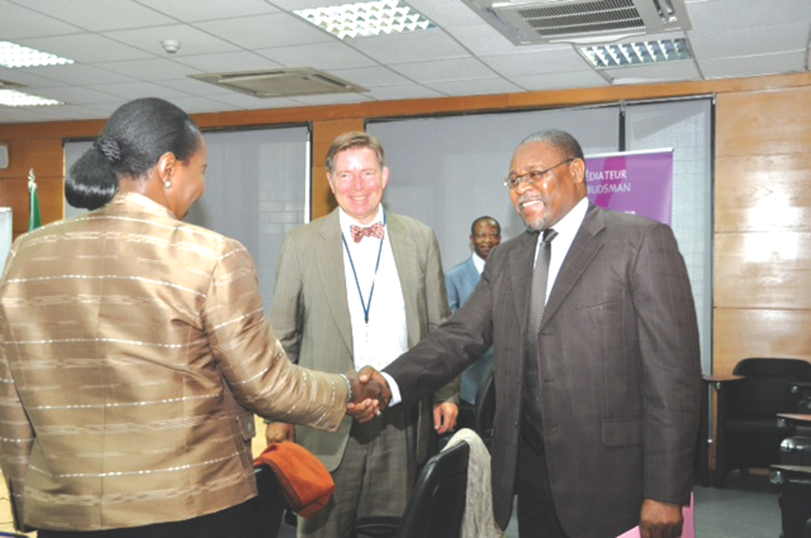
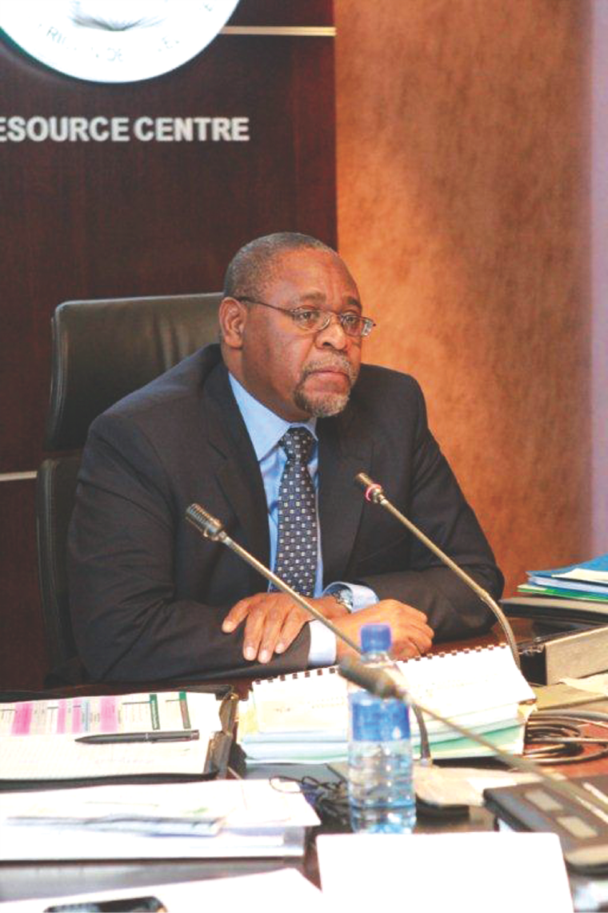

Candidate
The Candidate

Mr. Sakala, a Zimbabwean, was selected among three Candidates interviewed by a SADC Ministerial Panel, to stand for the Presidency of the African Development Bank (AfDB) in the elections scheduled to take place on 28 May, 2015. During his 31 years of working in the Bank, he travelled extensively across the continent and abroad holding dialogue, monitoring implementation of projects on the ground, and exchanging ideas and experiences with a wide range of stakeholders.
Mr. Sakala is proficient in English and fully comfortable working in the French language.
Due to his commitment, ability, effectiveness and eficiency, he rose through the professional ranks of the AfDB:
- Vice President Country and Regional Programmes and Policies (April 2012 – October 2014).
- Acting Vice President Corporate Services (January – June 2012).
- Director, Reforms, Budget and Strategy (March 2007 – Jan 2012).
- Lead Economist, Operations Vice Presidency (September 2006 - February 2007).
- Resident Representative in Nigeria (Dec 2002 – September 2006).
- Division Manager, Social Sectors, North, East and South Regions (February 1996 – November 2002).
- Principal Programme Oficer (1992 – 1996).
- Associate/Senior Loans Oficer (1983 – 1991).
His last 18 years in the Bank were spent in various managerial positions. He worked in several key areas of operations and institutional governance and reforms, thereby giving him a unique profile and institutional memory. His field experience includes four years as Resident Representative in Nigeria, the largest Bank shareholder.
Consistent with the spirit of the Maputo Guidelines on Internal Candidates, he left the AfDB in October 2014. His last official position was Vice-President, Country and Regional Programmes.
VISION
His vision is of an Africa which is confident, integrated and prosperous.
This is inspired by the Vision of the Founding Fathers of the AfDB and the Agenda 2063 of the African Union.
MISSION
To Sustain and Enhance the Transformation of the African Development Bank and Africa.
This entails consolidating and refining the current operational strategy, reforms and initiatives, in order to guarantee the Bank's continued relevancy to its clients (including in fragile and emergency situations such as the Ebola Epidemic) and delivery of inclusive and sustainable results.
The Bank must stay committed to being at the centre of Africa's transformation and be the respected voice on African economic and social developmental issues. Above all, it should reinforce its status as the premier African development institution.
The Bank must carry out its business in a cost effective manner. To this end, an area requiring further rationalisation is the implementation of the decentralisation programme.
Over the next five years, the new management team under his leadership will strive for:
- Consolidation of the AfDB Ten Year Strategy (2013 - 2022). Where necessary, it will be further aligned, without sacrificing selectivity, with the AU’s Agenda 2063 and the post-2015 SDGs. Periodic stock taking will be undertaken.
- Strengthening performance and accountability so as to improve the quality of Bank delivery on the Strategy.
- Increased dialogue, networking and communication within the Bank itself and with all stakeholders and relevant centres of Excellence.
- Enhancing AfDB’s role as a trusted and respected voice at home and abroad and being a leading centre of knowledge of Africa’s development issues.
Candidate's Areas of Special Attention
1. Closing the Infrastructure Gap:
Top priority for the foreseeable future, with special attention to the challenges of rapid urbanisation, promoting intra African trade and the transformation of the rural economies. Greater mobilisation of Africa's own resources will be critical.
2. Regional Integration:
Deepen dialogue, trust and strengthening of regional institutions. Rigorous implementation of priority hard and software projects.
3. Fragility and Conflicts:
In close collaboration with relevant AU and regional organs, identify key drivers. Help strengthen the building of effective institutions, equality before the law, and promote the opening of political and economic space to foster a greater sense of inclusion among different population groups.
4. Private Sector Development:
Enhance development of a credible, resilient African private sector through promoting enabling environment and effective institutions and mechanism to finance SMEs. In addition, provide robust support for PPPs.
5. Gender Equality:
Build deeper understanding of what drives gender prejudices, exclusion and violence in the different communities and countries. Engage with key stakeholders, identify actions and support effective implementation.
Cross Cutting Issues
Greening African Economies
Greening Africa is a shared agenda. It requires constant dialogue on options and measures to ensure optimal adaptation and mitigation results.
Governance and Resource Mobilization
Global fiscal constraints and the huge financing gaps, especially for infrastructure, demand that Africa should do more for itself. Bank and member states' efforts towards greater domestic resource mobilisation, prudent and equitable management of natural resources and enabling environment for domestic, diaspora and external private investments should be scaled up.
Decentralisation
There has been significant progress in establishing physical presence. Critical efforts should now be directed towards enhancing engagement in policy dialogue, focused analytical work at country level, donor coordination, portfolio quality and business development.
Staff
At the center of the delivery agenda is the Bank's staff - diverse, motivated and passionate about Africa's transformation. Staff imbued with humility and an ability to listen to clients; as well as a high degree of teamwork, professionalism, transparency, integrity and excellence in what they do. Staff who strive to understand Africa better than their peers. These are the standards Management will reinforce.
What the Sadc Candidate Brings
- A burning passion for Africa’s transformation.
- Extensive knowledge of the regional member states.
- Deep knowledge of the Bank.
- A strong track record in innovation, monitoring and implementation of key reforms in the Bank and its operations.
- Effective consultation, listening and teamwork skills.
 
AfDB
The African Development Bank
In November 2014 the AfDB turned 50 years. The Founding Fathers had a Vision of an integrated and prosperous Africa. To this end, they set up the Bank to help promote sustainable economic development and social progress of all the African countries, individually and jointly.
The Bank has come a long way in the discharge of its given mandate. Today it is acknowledged as financially solid; has a sound business model and processes; well-articulated operational priorities and is increasingly demonstrating positive results. It is also recognised as a respected center of knowledge and a credible voice on African development issues
The Bank is indisputably at the centre of Africa's Transformation. It must stay the course, do more and demonstratesustainable results.
Interview
Interview with IC Publications
1. What will be the first action/measure you will take if elected President?
To ensure that every member of staff understands my vision and what I expect from each and every one to deliver in order to promote the sustainable transformation of the Bank and the continent. Building a winning team which is focused on delivery is paramount, in particular at the level of Managers, Directors and Vice Presidents. The right team must have the appropriate mix of skills and teamwork attributes.
Practically, this might require some organisational fine tuning and good communication to both internal and external stakeholders. I will, therefore, meet with Senior Management and Board Members, share further details on my vision and get their views on priority actions that the Bank needs to take to stay on track and deliver whilst remaining responsive to the diverse and dynamic environment in Africa.
2. What is the most compelling reason for voting for you?
It starts with an understanding of why I decided to stand.
I strongly believe that the most critical challenge for the Governors as they make their decision on who to vote for and for the new management team, is the need for implementation and delivery in a cost effective way on the Strategy and several highly commendable initiatives that are already on the table. This calls for both consolidation and well selected and carefully designed innovations.
I believe that my passion to contribute towards Africa's transformation and:
1) my long experience in the Bank working in a number of different key areas of operations and institutional governance and reforms that have placed the Bank where it is today;
2) extensive knowledge of the African countries, economies and leaders;
3) strong belief that Africa can and has the capacity to do more for itself; and,
4) great familiarity with the international development landscape, have given me a unique and right profile to build on Kaberuka' successes and deliver results.
Above all, I will ensure smooth transition whilst quickly scaling up on the existing gains and momentum.
3. What needs to be changed in the Bank's methods to ensure that Africa really takes off on the path for development?
First and foremost, I believe that it is the responsibility of leadership in each country to chart and resolutely implement a development path for their countries and regions.
The Bank must, therefore, build trust in the ability of Africans to design and implement development programmes and continue to provide informed advice.
In general, Bank Management and Staff must constantly be alert on what is working and what is not; be prepared to change long held views on development approaches if these are in conflict with new emerging thinking from the African champions of reform and development. The Bank must be ready to embrace a new role as the bridge between the old development banks and the emerging players and institutions such the BRICS.
To underpin the above, the Bank must have passionate, listening, innovative, more risk taking minds with foresight and an institutional environment which fosters these attributes.
4. Give a concrete example of a situation where the AfDB has done something other Banks/organizations did not do but by so doing it enabled the AfDB to respond to a specific African need/situation.
Three quick examples:
1) Timely and accelerated responses during the 2008/09 financial crisis;
2) Partnership with the AU on the Sudan/South Sudan question; and,
3) Setting up of the Africa 50 Fund in response to the infrastructure financing gap.
5. Africa is going to witness the emergence of dozens of millionaires in the coming years. Do you believe there should be a special tax for millionaires to finance development in Africa?
I assume that the emergence of the millionaires will be a reflection of a more conducive environment for ideas to flourish; for all citizens so inclined to create wealth within the law and facing minimum hindrance. If this is the case, then it would be a positive development which should be encouraged so we can have millionaires in all our villages!
Rather than mere targeting of millionaires, the priority should be to have transparent, fair tax regimes for all. A growing, resilient private sector which creates jobs and demonstrates credible corporate social responsibility should be encouraged to flourish.
The Bank should, therefore, assist Governments reform and improve tax regulations and systems, encourage new entrepreneurs to emerge and help build transparency and accountability in the use of public resources.
6. How will you introduce your own ideas and priorities given that the Ten Year Strategy is under implementation?
The TYS was only approved in 2013. As I stated in my Vision Statement, it charts a credible roadmap for the Bank in its quest to be at the centre of Africa’s transformation agenda. I was part of the Senior Management Team which crafted and proposed it to the Shareholders.
The TYS foresaw the need for periodic reviews and adjustments based on results and emerging issues. I anticipate the first review to take place in 2016. This will be an appropriate time to further strengthen alignment with the AU Agenda 2063 and the post 2015 Sustainable Development Goals. There will also be need to reflect on lessons from the Ebola epidemic. However, I still expect that infrastructure, regional integration and private sector development will continue to be the core operational priority areas; whilst gender equality, addressing fragility and food security will remain areas of special attention.
Besides the strategy, the review will also include revisiting the instruments we have and should introduce.
7. Do you intend to continue with the Decentralisation Programme despite the fact that they have limited autonomy and are costly?
Decentralization is costly but necessary. The challenge is always to strive for a cost effective and efficient balance against the results desired and seen. I am also aware that we have failed in adequately reporting and measuring our successes and systematically building on them.
A comprehensive review of the Decentralisation Programme, including the operations of the two pilot Regional Resource Centres, had started, under my watch, before I left the Bank.
I understand that Management has since been regularly engaging the Board on the findings and proposed restructuring. I will build on this work, as well as introduce, where appropriate and after necessary consultation with the Board, some additional ideas which I might have. There shall be clearly laid down rules of the game to the concerned Vice Presidents.
8. The ADB is an African institution. However, the non-regionals have greater and at times decisive influence on important issues, including the choice of the President. Does this worry you?
Not at all.
One of the facts that Africa can be proud of is the very transparent process by which the President of the Bank is chosen.
There are also adequate safeguards protecting the African voice and leadership without creating unnecessary divisions in the support for African led development of the continent.
Any partnership, marriage, depends on the shared understanding of that relationship. I believe that the Bank’s agenda is well understood by all its shareholders and that all are working towards delivering the expected results. I also believe that this is what influences their choices of Presidents of the Bank at any given time.
9. The Bank has the reputation of being very slow between receipt of documents and disbursements. How should processes be accelerated to avoid the Bank being overtaken by other institutions (China, Turkey, Brazil etc)?
“Just one in three of these (major) projects was delivered on time or on budget. Some project leaders were running multiple projects of huge complexity. Skills in project management were lacking. There wasn’t even central oversight of all of Government’s projects.”
The above is from a Foreword by the British Minister for the Cabinet Office in The Major Projects Authority Annual Report.
The above quotation is not intended to make an excuse or justify observed mistakes or delays on the part of the Bank or Clients. Also, the size of the projects being referred to are much larger than most that the Bank is involved in. However, it does highlight the fact that this is an issue of concern across many governments and countries. We can learn from their experiences.
There are many factors at play. Attitudes, processes, complexity, capacity, special interests, poorly or inadequately prepared projects, bureaucratic red tape, etc.
It is, therefore, important to always emphasise delivery through high standards of professionalism, teamwork, transparency, accountability and ethics among staff. The same applies to counterparts on the side of Governments. Meanwhile, institutional reforms that have been implemented or are underway are addressing many of these issues. In its operations, the Bank must strengthen ongoing work to further strengthen and rationalize the project cycle review and the fiduciary oversight (monitoring of financial, procurement, and reporting of development results).
These efforts should be stepped up by the new President.
Concerning Turkey and BRICS, this is a welcome addition to Africa’s partners. The resources and experiences they will bring, in support of the efforts towards inclusive and greener development, is indeed welcome. We should work together.
10. Which woman or man, alive or historic, who inspires you most?

Photos
|  |


|

|

|